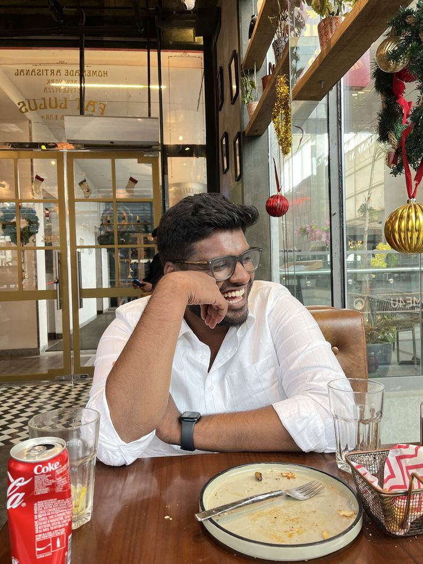
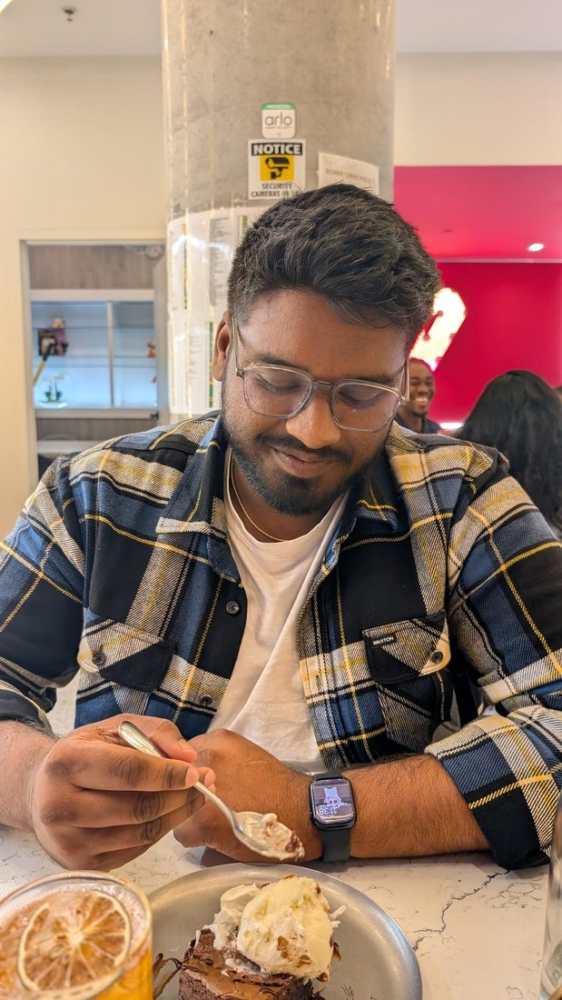

(TLDR: I'm a data analyst who asks too many questions — and hasn't stopped yet.)

I'm a data analyst based in Toronto. I started as a mechanical engineer and ended up writing SQL to make sense of insurance data in Mumbai — and never looked back. Something clicked when I realized you could turn a messy spreadsheet into a decision someone actually makes.
I came to Canada in 2023 to do a Master's in Business Analytics and AI at Ontario Tech University. Graduated with a 4.15 GPA, Dean's List. Led 25+ data analytics competitions across Canada as VP of the Google Data Visualization Club. The plan kept changing. The curiosity didn't.
Right now I'm at Shoppers Drug Mart doing store operations while I job search. Most people see that as a gap. I see it as ground truth — I understand how retail data gets generated before it ever hits a dashboard. That context matters when you're building something people actually rely on.
I'm actively looking for Business Intelligence, Customer Insights, and Data Analyst roles across Canada — at companies like Loblaw, Canadian Tire, TD Bank, Scotiabank, and others where analytics drives real decisions.
Of course, all views expressed here are my own.
